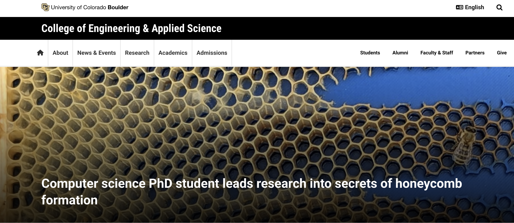

Media Coverage & Outreach
PNAS Science Sessions podcast
A short conversation with Orit Peleg, Francisco López Jiménez, and me about how honeybees overcome geometric constraints when building their homes.
A short conversation with Orit Peleg, Francisco López Jiménez, and me about how honeybees overcome geometric constraints when building their homes.

CU Boulder College of Engineering and Applied Science
Applications of the work in bio-inspired distributed computation.
Applications of the work in bio-inspired distributed computation.
CU Boulder Computer Science — My mentoring experience
Mentoring two high school students, Charlotte Gorgemans and April Tong, for over a year during and after Covid.
Mentoring two high school students, Charlotte Gorgemans and April Tong, for over a year during and after Covid.